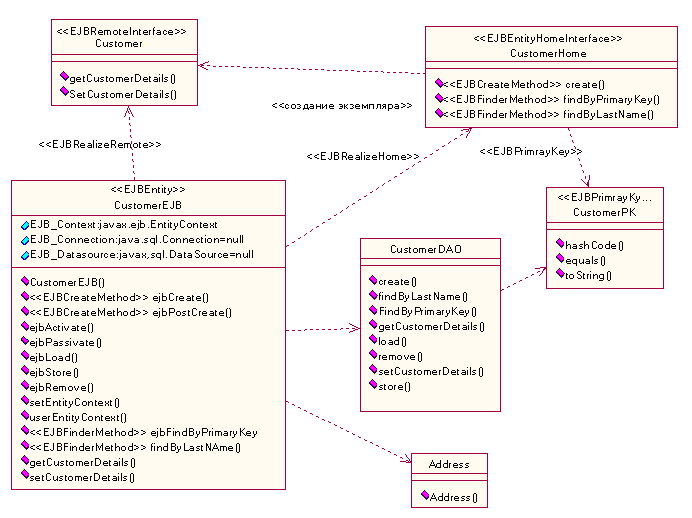

| Рекомендация: Идентификация объектов EJB |
 |
|
| Связанные элементы |
|---|
ВведениеЭто руководство посвящено идентификации объектов EJB. Дополнительное руководство об объектах EJB предоставлено в разделе Руководство: Объект EJB Идентификация объектов EJBОбычно объекты EJB используются для реализации бизнес-объектов на стороне сервера, которые требуют поддержки транзакций, защиты и удаленного доступа или работают с общими данными (например, изменяют информацию о счете). Объекты EJB часто идентифицируются во время идентификации классов проекта из Рабочий продукт: Класс анализа. Классы управления являются подходящими кандидатами для bean-объектов сеанса, потому что bean-объекты сеанса приспособлены для предоставления управляющей логики. Сущностные классы являются подходящими кандидатами для bean-объектов сущностей, потому что они приспособлены для хранения данных. Обратитесь также к следующим более специальным руководствам:
Сравнение bean-объектов сеанса, сущности и управляемых сообщениямиОбобщая некоторые из названных руководств, эта таблица определяет роли, которые играют различные объекты EJB, способ доступа к ним и природу их состояния.
Моделирование объектов EJBОбъекты EJB моделируются как набор классов стандартных типов. В частности, применяются класс bean-объекта и любые классы интерфейса EJB. Интерфейсы EJB моделируются как классы стереотипов, а не интерфейсы UML, по причинам, обсуждаемым в Руководство: Интерфейсы для приложений J2EE. Взаимосвязи между классами bean-объектов и интерфейсами EJB моделируются как зависимости интерфейсов от класса bean-объекта, а не как взаимосвязи реализации. Обычно, Java реализовывает конструктор, представленный как реализация между интерфейсом и классом. Однако, классы EJB не реализовывают своих классов интерфейсов, и поэтому более подходит зависимость. На следующей диаграмме показан пример. Более подробная информацию об этом примере находится в Руководство: Проектирование подсистем для приложений J2EE.  Пример EJB и класса помощника Ниже приведены стереотипы UML, применимые для моделирования объектов EJB.
EJB обычно сгруппированы в подсистеме вместе с относящимися к ним классами и объектами EJB. Это позволяет разработчику предоставлять представление спецификации объектов EJB, независимое от их реализации, а также группировать их вместе с другими элементами проекта, чтобы обеспечить высокий уровень абстракции. Более подробная информация находится в разделе Руководство: Проектирование подсистем для приложений J2EE. Полный список стереотипов для представления EJB находится в Спецификации преобразования UML/EJB (RSC01). Моделирование bean-объектов, управляемых сообщениямиСмоделируйте зависимости разделов и очередей, к которым подписан bean-объект, управляемой сообщениями. Руководство о моделировании параллельных элементов в приложении J2EE находится в разделе Руководство: Описание динамической архитектуры приложений J2EE. Моделирование свойств EJBТакие механизмы, как управляемое контейнером хранилище, транзакции, проверка прав доступа и так далее, могут быть смоделированы как дополнительные свойства класса bean-объекта, или они могут быть просто включены в текстовое описание, связанное с классом bean-объекта. Используйте диаграммы схем связей для рассмотрения сценариев, используемых этими механизмами. Моделирование взаимодействий объектов EJBДиаграммы взаимодействий (диаграммы схем связей и совместной работы) могут быть использованы для представления динамического поведения объектов EJB и взаимодействия объектов, отличных от EJB (включая Web-компоненты и внешние клиентские приложения), с объектами EJB. Эти диаграммы взаимодействий по существу описаны в разделе Задача: Проектирование прецедентов. Взаимодействия могут быть показаны в bean-объекте как черный ящик, взаимодействующий только с интерфейсами EJB. Взаимодействия могут также показывать реализацию bean-объекта с помощью взаимодействий между интерфейсами EJB и классом реализации bean-объекта. Заметьте, что промежуточное взаимодействие с контейнером обычно не показывается. Bean-объекты, управляемые сообщениями, используют сообщения, поступающие асинхронно из других источников. Можно показать асинхронный поток сообщений непосредственно от поставщика к потребителю, или можно смоделировать взаимосвязь более точно с помощью разделов и очередей. Пример диаграммы схемы связей, иллюстрирующей взаимодействие класса клиента с интерфейсом EJB, показан на Рисунке 2.
Рисунок 2: Взаимодействие класса клиента с интерфейсами EJB На Рисунке 3 показана диаграмма схемы связей, которая подобна приведенной на Рисунке 2, но она показывает взаимодействия с реализацией bean-объекта. |


© Copyright IBM Corp. 1987, 2006. Все права защищены.. |